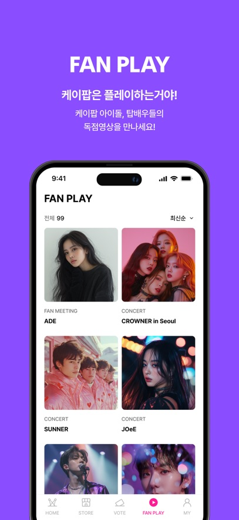

BIGC 从 0 到 1：打歌投票、独家花絮、演出购票一次搞懂
这篇教程带你从零上手 BIGC——安装注册、关注本命、攒宝石投票、蹲独家花絮、买计入榜单的专辑，每一步都有明确操作和新手避坑点。
读完这篇教程，你能独立完成：注册账号、关注本命、参与打歌投票、在商城购买计入 Hanteo 和 Circle 榜的专辑、以及找到只有这个平台才有的独家幕后视频。
准备工作：设备与前置条件
BIGC 是一款面向 K-pop 粉丝的综合性平台应用，它的官网上能看到完整的功能介绍，核心功能集中在打歌投票、独家直播与花絮、演出票务、商城购物四条线。开始之前确认三件事：
- 设备：支持 iOS 和 Android 双平台，手机端体验最完整；
- 网络：直播和高清视频对带宽有要求，Wi-Fi 下看更稳；
- 账号心态：后面会说账号安全的坑，先记住一个原则——一个账号养到底，不切号不共享。
第一步：下载安装与初始注册
先装应用。安装包从官方下载获取，装好之后打开 App，第一次启动会引导你走完注册流程。这里有两个新手容易走神的地方：
- 邮箱验证：注册后立刻去邮箱点激活链接，不验证的话部分功能会被限流；
- 昵称和头像：随便填就行，后面能改，但昵称别带违规词——社区发言风控很严。
注册完成进入主界面，你会看到几个核心分区：VOTE（打歌投票）、FAN PLAY（独家视频）、STORE（商城与票务）。
第二步：关注你的本命
刚进来是一片空白，先关注你想追的艺人或组合。操作很简单：
- 点底部导航的「搜索」图标；
- 直接搜艺人名字或组合名；
- 找到官方账号，点「关注」。
关注之后，这个艺人的投票提醒、独家花絮上新、演出公告都会推送到你的消息中心。不只是歌手，演员和艺人博主也在平台阵容里，比如朴恩斌、李栋旭、Infinite、P1Harmony 这些都曾出现在官方商店页的公开名单里。名单会随演出档期滚动，搜不到不代表永远没有——过几个月可能就上了。
第三步：攒宝石与打歌投票
投票需要宝石，这是平台的通用虚拟货币。攒宝石有免费路径也有付费路径，新手先走免费：
- 每日签到：打开应用首页就能看到，连续签到奖励递增；
- 观看广告：看一段短广告换宝石，每天有上限；
- 参与社区活动：偶尔有答题、互动任务送宝石。
攒够宝石之后，进 VOTE 分区就能看到当前打歌节目的投票列表。每条投票任务会标明截止时间和你可用的票数。投的时候注意一号一投的底线——不要动多号刷票的念头，平台风控会检测设备行为，轻则票数清零，重则殃及本命的榜单成绩。
第四步：蹲独家花絮与待机室内容
这是 BIGC 区别于其他平台的内容护城河。打歌舞台全网都能看，但待机室里艺人候场在做什么、正式演出前的排练片段、只有这个平台才有的独家采访，全在 FAN PLAY 分区。
找独家内容的最佳姿势：
- 进 FAN PLAY 分区，默认按最新排序；
- 关注本命之后，上新内容会直接推送提醒；
- 大型活动（颁奖礼、演唱会）前后是花絮高发期，值得每天刷一次。
内容形态不止视频，还有见面会直播和专属演出。有些线上直播是配合线下票一起卖的，买了线下票经常会附带线上观看权限。

第五步：商城购物与计入榜单的专辑
对应援型粉丝来说，买专辑不只是消费——为榜单出力才是核心诉求。韩国主流唱片榜有两大体系：Hanteo Chart（实时销量，看首发冲刺）和 Circle Chart（月度年度汇总）。在 BIGC 商城买的专辑销量会实时计入这两大榜单。
下单前认准两个标识：
- 商品页注明计入榜单的才是有效销量，海淘代购若无榜单授权可能不计入；
- 首周购买最关键——初动成绩按发售首周统计，预售和首周下单价值最高。
散买也有效，单张专辑同样计入，不需要成套批量囤。买完留好订单凭证，榜单争议时能查。商城里除了专辑，还有周边、应援棒等品类，上新和预售建议开启推送提醒，热门货手慢无。更详细的榜单规则和渠道对比可以去BIGC文档里翻。
常见卡点：三个新手最容易翻车的地方
卡点一：频繁切号导致账号被限制
设备频繁换号登录是风控的重点观察对象。哪怕你有多个账号，也别在同一台设备上来回切。被限制之后怎么办？先看系统提示的具体原因，多数风控有明确的解除时间；不要反复尝试登录或再注册新号，可能加重判定；误判的话走客服渠道申诉。
卡点二：买了专辑却不计入榜单
最常见的原因是从非授权渠道购买。代购价格可能便宜，但如果代购那边没有跟平台打通榜单数据链路，销量就白买了。认准 BIGC 商城里标注了榜单计入标识的商品页再下单。
卡点三：找不到本命的独家内容
搜不到不代表没有。FAN PLAY 分区按最新排序翻看，或者直接在搜索里搜艺人名字加「花絮」「待机室」关键词试试。独家内容是随档期滚动的，可能你关注的时候刚好没内容，等有新演出就上了。
进阶玩法
以上五步走完，你已经能完整覆盖 BIGC 的核心使用场景。往下可以玩的还有：演员线的粉丝见面会直播、社区里的应援话题互动、以及攒够宝石之后尝试更多投票档位。记住账号安全第一，应援是长跑不是冲刺。这些实操细节我同步维护在三个仓库里，文档随时更新——GitHub 放主站，Gitee 和 GitCode 做国内备份，访问哪个顺手就用哪个。